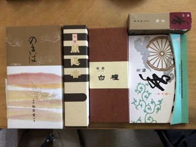
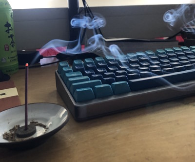

It seems that time has come again. I have added another new hobby to my repertoire.
Possibly two if you count the fact that I own 2 fountain pens and would like to acquire more.
But that is not the focus of today, rather, my latest obsession is with Japanese Incense.
Not only is the aroma something that can be savored on its own, it is also the perfect companion for
my tea sessions.

I started off with a box of Shoyeido's Nokiba ("moss garden"),
and so far, I think it's still my favorite. Being a cheap daily incense makes it even better! It's sweet, resinous, woody, and vanillic,
with a bit of patchouli and a slightly herbal character. Although it was my first incense, it smelled very familiar even on its first burn.
Perhaps I had smelled it once before when visiting Japan almost 8 years ago.
As of now, I also have a small pack of Minorien's Fuuin and Baieido's Kai Un Koh, which are both very
dry and woody with a focus on Sandalwood and Aloeswood respectively.
For my non fragrant friends, aloeswood is another name for
agarwood, more commonly known as oud. Fans of middle eastern style perfumery will be very familiar with this note.
I also purchased a sample set of Shoyeido's Horin line, with Shirakawa, Nijo, and Muromachi being my favorites
as well as a sample box of Horikawa which is unfortunately not included in the main sample set.

Below are some quick reviews of each Horin incense. Please note that I have only smelled each one once as of the time I am writing this,
so my opinions may change with subsequent burnings.
Tenpyo: Very deep, earthy, peaty, and woody. Almost fecal, must have a certain blend of oud. Smells very familiar and rustic in a way I can't put my finger on.
I can't say I like it now, but I'm sure it will one day comfort me like a dram of Laphroaig.
Edit: 14 Apr 2023. Just burned this for a second time. For some reason it smelled very farmy and fecal the first time around. But this time I got a deep earthy richness,
and the offputting dung/peat smell was nearly gone. I suppose it was just a character my nose wasn't used to and I simply needed to adjust to it, because I found it to be very enjoyable this
time around.
Muromachi: Earthy, spicy, and complex. Similar to Tenpyo, but there's so much more character to pick out that I haven't yet. Really excited to burn again.
Genroku: I honestly don't rmember how it smells but I think it was fairly woody and earthy, possibly somewhat resinous.
Shirakawa: Delicious and smooth with notes of vanilla, cinnamon and a faint smokiness.
Nijo: Thick, warm, and sweet with a floral character and a strong honey like aroma.
Horikawa: Currently burning as I write this. It has a certain woody and earthy character that the rest of the Horin line seems to share. Similar to Shirakawa,
although I feel that it has traded some of the vanilla sweetness for more of a dry cinnamon spiciness (although it is still definitely sweet). It is bright but rich and
has a slight resinous quality as well. Someone on Reddit also mentioned a cream soda note and interestingly enough, I totally get that.
9 April 2023